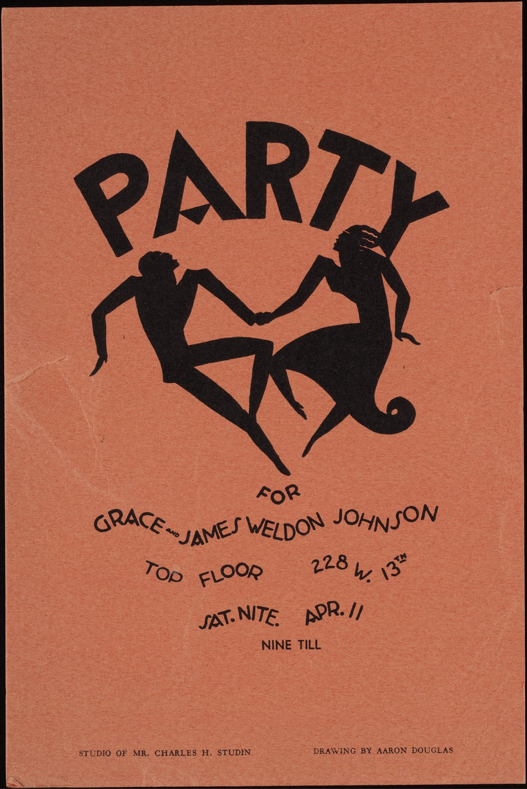
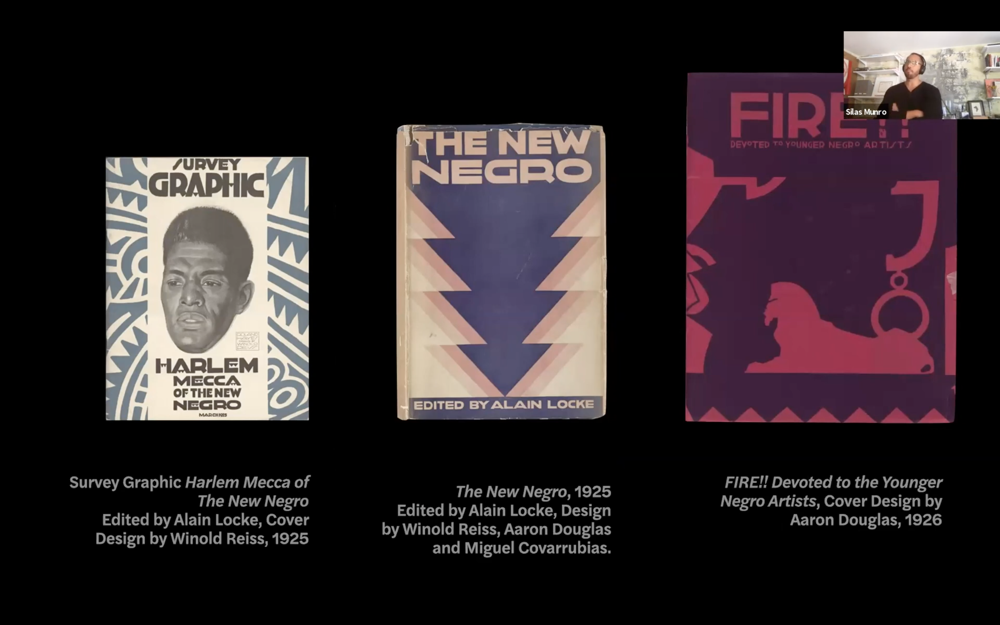
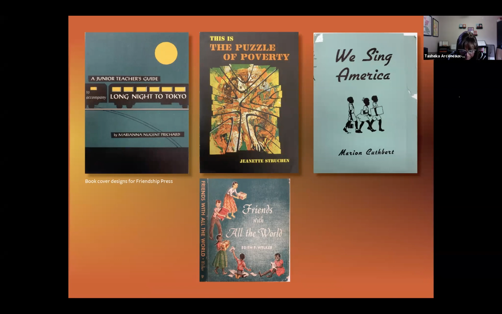
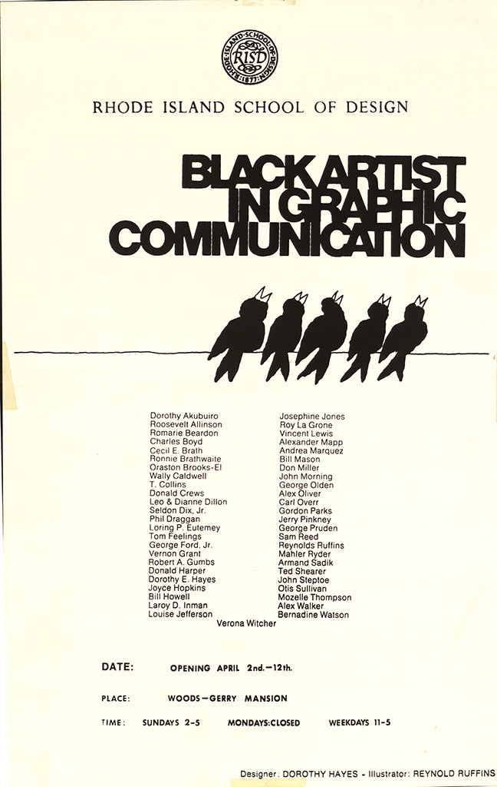

I haven’t ever heard Sylvia Harris’ voice on recording before, but I felt it in her words found in “Searching for a Black Aesthetic in American Graphic Design History.” At the time Harris wrote this essay, only one to two percent of all designers were black. Today, it’s estimated that number has only increased to three percent, according to 2019 Design Census results.
Harris cites a 1995 study by Claude Steele that looked at the link between performance and self-esteem and concluded that self-confidence may be the most important element in the lives of successful African Americans. “For instance,” she writes, “the spectacular success of black musicians demonstrates the relationship between confidence, leadership, and success. Black musicians have been successful because they feel confident and secure about their work. They are secure because they are working within intimately 125 known traditions built by others like themselves, and they are motivated by the thrill of adding to that successful body of work.”
I thought this comparison between black graphic designers and black musicians was insightful and poignant — poignant for the black designers who feel and felt without known and celebrated roots. Here I think of Mavis Staples who sang with her family from the 1950s onward, and later as a solo artist, whose sound was totally new at the time — an intersection of gospel, blues, and rock and roll.
After reading about the discrepancies experienced by black musicians and black designers, I remembered a quote that went something like, “If only America loved black people as much as we love black culture.” Interestingly, a message comparing music to design appears in issue one of New Zealand-published magazine, The National Grid, though not in reference to black designers: “I think it would be interesting if graphic design could look at itself in relation to music rather than architecture or industrial design. Then we wouldn’t have to talk about problem solving, and we could talk about resonance instead.”
Harris writes that black designers, with no knowledge of existing roots, traditions, or kinship to graphic design, can feel pressure to assimilate into the white aesthetics of design. “Lack of exposure to the prevailing aesthetic traditions also puts them at a disadvantage. This outsider posture leads many black designers to compulsively imitate and assimilate mainstream aesthetic traditions in order to feel accepted and be successful. More often than not, black designers and students are trapped in a strategy of imitation rather than innovation.” So, I wonder if the work of black designers becomes more rooted in black tradition, as it is in music, and if it is included in history texts rather than still being overlooked, there might be a deeper sense of resonance for existing and future black designers to graphic design; I wonder if black designers would feel released from the systems that has triggered the tendency to imitate mainstream work, according to Harris (I wonder if this tendency is still prevalent).
“Right now,” she writes, “black design students would benefit greatly from a study of their design traditions. Otherwise, they may be doomed to a future of bad imitations.” Sheila Levrant de Bretteville, who founded the first design program for women at California Institute of the Arts in 1971, stated that “women designers could only locate and solve design problems in a responsive way if they simultaneously studied their own history, tried to isolate female values and worked cooperatively,” and Harris is arguing the same for black designers.
The history and traditions of black graphic styles do exist, stretching from the New Negro movement of the 1920s through the hip-hop aesthetics of the 90s, Harris writes, but they have been overlooked by historian-writer-designers who have chosen to focus again on European, white designers and histories. Maurice Cherry, a designer, educator, and creative strategist supports Harris here. In an interview with Creative Bloq in 2014, Cherry states that the black design aesthetic in America is not confined to a single style, but “can span from antebellum times to the Harlem Renaissance to hip-hop to afrofuturism.” Cherry also presented “Where are the black designers? at South by Southwest Interactive conference in 2015, which I found extremely engaging just through the transcript.
Harris writes that she believes the history of the black aesthetic can be found in unlikely places and across disciplines: she writes that the black aesthetic can be found in the work of white designers and artists who evoked expressive styles of black culture. Cubist artists Georges Braque, Pablo Picasso, and Fernand Leger all admitted to “the significant impact of African art on their work.” Additionally, Harris writes that in the 1920s, “jazz” was no longer just a musical term, but a stylistic one, and the style of jazz and the rigidity of modernism did not mix. It sounds like jazz was liberating and freeing, not just in design but also in thinking and in writing.
In the 1920s, the climate of relative freedom and the popularity of jazz in the North saw a number of black people publish their own texts. Soon Alain Locke declared the emergence of “the New Negro“ and black culture as the “appropriate source of inspiration and content for African-American artists.” Harris writes that European modernist Winold Reiss, who created African-inspired illustrations for the book The New Negro (named for Locke’s title essay) was one of the first designers to give graphic expression to the black aesthetic.
Harris writes that Locke and Reiss encouraged young black artists, including Aaron Douglass, to “expand the emerging modernist trends” and lead the New Negro art and design movement. I immediately wonder about the race of Locke and Reiss and discover that Alain Locke was American and black, distinguished as the first African-American Rhodes Scholar in 1907 and known as the philosophical architect of the Harlem Renaissance. Winold Reiss was a German, white modernist. Following the encouragement of these men, Douglas created covers for the quarterly magazine Fire!! which Harris says show the “emergence of a unique graphic design expression that combines the syntax of cubism with the forms of African art.”
Jumping ahead 70 years to the first Organization of Black Designers conference in October 1994, filmmaker Arthur Jaffa cited David Carson’s Ray Gun magazine as the best example of a visual jazz aesthetic. I don’t know in what context Jaffa cited Carson’s jazz aesthetic — as praise or not. Four years later, Harris published this essay which stated that popular artists and designers like Keith Haring and Carson “benefited from the lack of black participation in the design profession during the late 1980s surge of interest in rebellious urban style. They shaped new styles and lucrative careers based on bold public vernacular expressions such as graffiti and rap, class rebellions and black rhythms, and tribal symbolism.” This is new and disturbing knowledge to me. Was this influence acknowledged by Carson and others, or was the work simply appropriated without respect for its original source?
Today on Carson’s personal website, he shares Harris’ critical quote of him and below writes, “At the first organization of Black designers conference, filmaker Arthur Jaffa cited David Carson’s Ray Gun magazine as offering the best example of a visual jazz asthetic.” Below that mentions that he was the recipient of the design profession’s highest award in 2014 — an AIGA Gold Medal — and I don’t understand why. Is he trying to be transparent or is he still playing defense after all these years? Regardless, I think Harris is right: there is evidence, though silenced, of the black aesthetic and to find it we must look at the oppressive systems and people that aim to steal credit and history from black artists and designers.
I want to talk a bit more about this series of micro lectures titled The Missing Chapter(s): Some History About Black Graphic Design presented by Pierre Bowins, Tasheka Arceneaux Sutton, and Silas Munro, which I referenced in my text about Sylvia Harris. Silas Munro walks us through a series of three publications for his micro lecture A Wounded Fire: Queerness in Black Publications from the Harlem Renaissance (he notes that the work shown is not just by designers and artists who identified as queer or even black). Two of the three publications are mentioned in Sylvia Harris’ 1998 essay: Survey Graphic: Harlem Mecca of the New Negro (1925; not mentioned in Harris’ essay), edited by Alain Locke, cover design by Winold Reiss, The New Negro (1925), edited by Alain Locke, designed by Winold Reiss, Aaron Douglass, and Miguel Covarrubias, and Fire!! Devoted to the Younger Negro Artists (1926), cover design by Aaron Douglass.
Locke, who coined both terms the New Negro and the Harlem Renaissance, first worked on editing Survey Graphic (SG) and expanded this work into The New Negro, which Munro describes as a significance shift “from a focus on black bodies to black consciousness and black thought.” Munro says that his studio Polymode (studio partners: Silas Munro, Brian Johnson, and Ben Warner) was asked to design a critique to Alfred H. Barr’s iconic Cubism and Abstract Art chart and they created a map titled “Gays, Queers, Fags, Dykes, Sissies and Abstract Art. The connections linked in their design illustrate how “design, I think particularly through a queer lens, happens and operates in networks of connectivity and influence and chosen family, so you can see that all of these figures influence and affect each other and were situated in a vibrant and complex time,” Munro says.
Interestingly, Munro talks about Winold Reiss who served as a mentor to Douglass, and whose work revealed a mix of influences and collision of factors that created the image of black life through paintings completed by Reiss, a white artist and illustrator of German descent, but through the curatory framework of a queer, black man of Alain Locke. Acknowledging Reiss’ race and role in the Harlem Renaissance, Munro says, “A black aesthetic of graphic design is not in isolation just by black authorship and is also part of a kind of white perception of blackness or African-ness.”
Sticking around New York, in her micro lecture Black Women in Graphic Design, Tasheka Arceneaux Sutton says that Louise E. Jefferson, a black woman, was a founding member of the Harlem Artists Guild. Other members of the guild included Aaron Douglas, Augusta Savage, Selma Burke, Gwendolyn Bennett, and Jacob Lawrence. Jefferson took freelance work with the Young Women’s Christian Association by doing drawings for 75 cents, and later worked freelance and then full-time within the National Council of Churches’ publishing operations called Friendship Press; she became the Press Art Director making her the first black person in publishing.
Other notable black women designers in New York were Dorothy Hayes (1935-2015), who Arceneaux Sutton says recalled that when Hayes first arrived in the city “she couldn’t find any blacks who she could relate to professionally. The ones she tried to talk to wouldn’t talk to her, or they would just brush her off.” Hayes would say of this time in her life, “Nobody wanted to take the time to show or tell me anything. I vowed then that if I made it, I would never turn my back on any black person who came to me for advice and information who really wanted to learn.” I wonder if fear of the system in which they worked, surrounded by so few black people as is, was the cause of this. Because of her experience arriving in New York, Hayes went on to support and advocate for other black designers — men and women — through a show called “Black Artist in Graphic Communication” at Rhode Island School of Design featuring the work of 49 black designers, organized with book designer Joyce Hopkins. Arceneaux Sutton points out that the names of black designers, seen on the poster Hayes designed for the show, are seeds for further research.